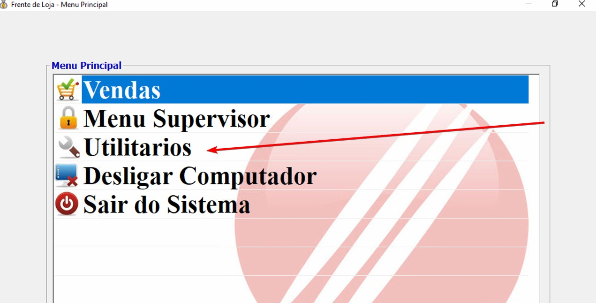
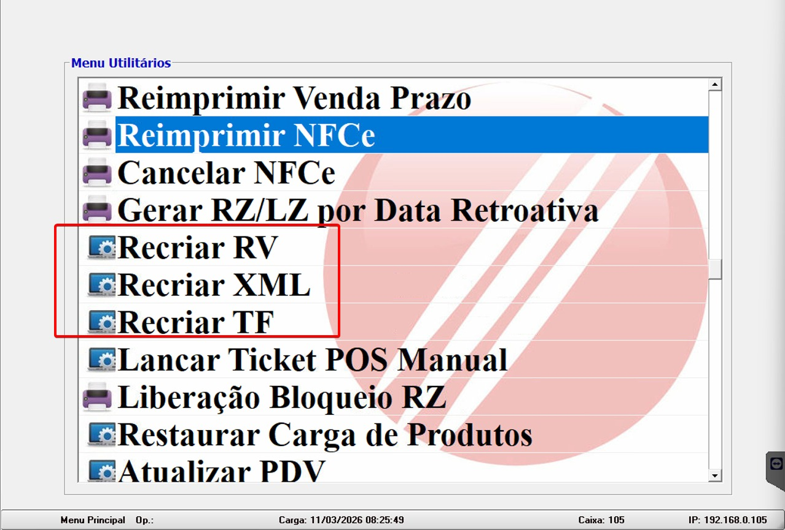
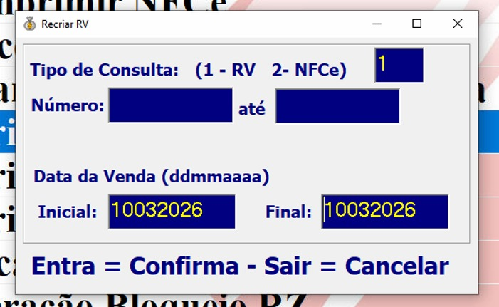
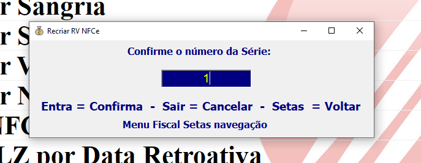
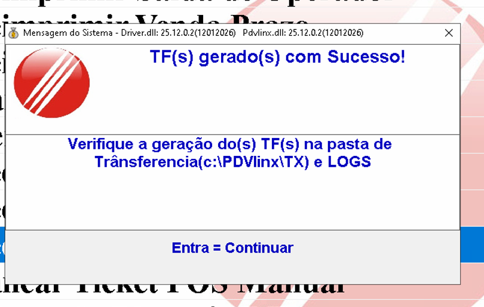
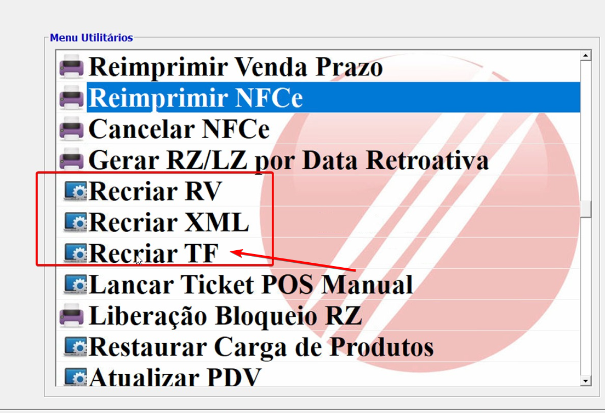

Quando as vendas parecem não ter Subido ao linear
Passo a Passo para resolver:
- Passo 1: No PDV em que as vendas não subiram, clique no menu Utilitários.
- Passo 2: Procure e abra a opção Recriar RV.
- Passo 3:Na tela que abrir, preencha as informações conforme a imagem: no primeiro campo digite 1 e, no campo de data, insira o dia em que as vendas foram realizadas. Após preencher, aperte Enter.
- Passo 4: Aperte Enter para confirmar a serie.
- Passo 5: Aguarde o processamento até que a tela de confirmação apareça.
- Passo 6: Repita o mesmo processo agora utilizando a opção Recriar TF.
- Aguarde alguns Minutos, Pois os arquivos estão sendo processados, Caso após alguns minutos a venda não subir, entre em contato com o TI.
- Para Agilizar envie uma foto do Relatorio de Fechamento de caixa






Nota: Se após esses testes não Resolver, abra um chamado técnico informando o que já
foi feito no Grupo do TI.